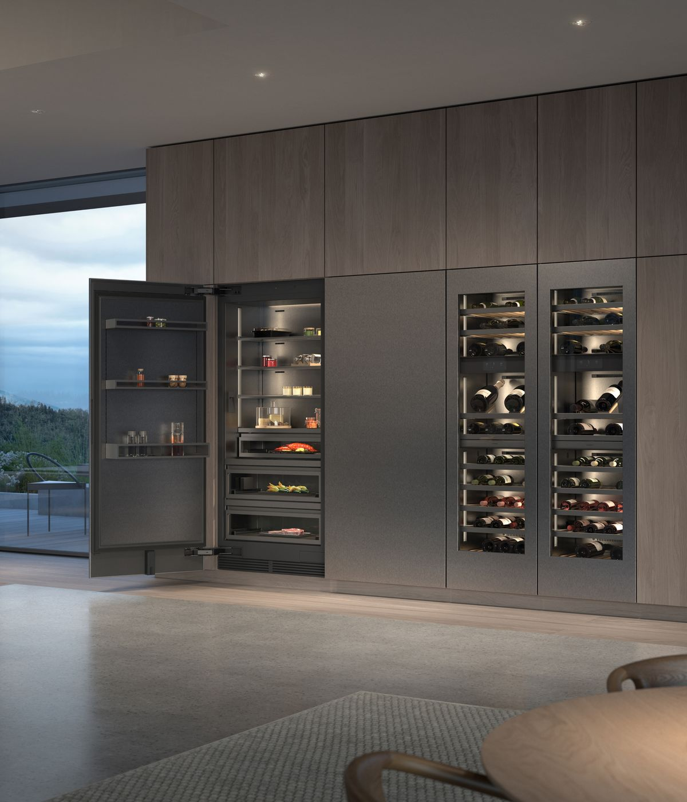

厨房智能硬件 × 竞品设计
嘉格纳制冷新品登陆中国：让冰箱、酒柜成为空间的一部分
从单台设备到模块组合，制冷产品开始与橱柜一起定义厨房。

据中国家电网10月22日报道，嘉格纳于21日在北京发布艺境灵动系列制冷产品，正式进入中国市场。系列涵盖冰箱、冷冻产品和酒柜，重点呈现模块组合、深色材质与暖色照明。
品牌官网将这一系列描述为可融入家具的制冷系统：并排安装时，内部搁架和门架可对齐，材质、灯光与触控界面共同建立视觉秩序。这次值得关注的是中国市场落地及整套空间表达；海外型号的联网、摄像头配置，仍需以中国具体型号为准。
中国家电网｜嘉格纳中国上市报道 · 2026-10-22 19:46（北京时间）嘉格纳官网｜Vario cooling Expressive series · 产品背景资料，10月23日核验中国上市活动：10月21日；报道：10月22日。不是全球首发。